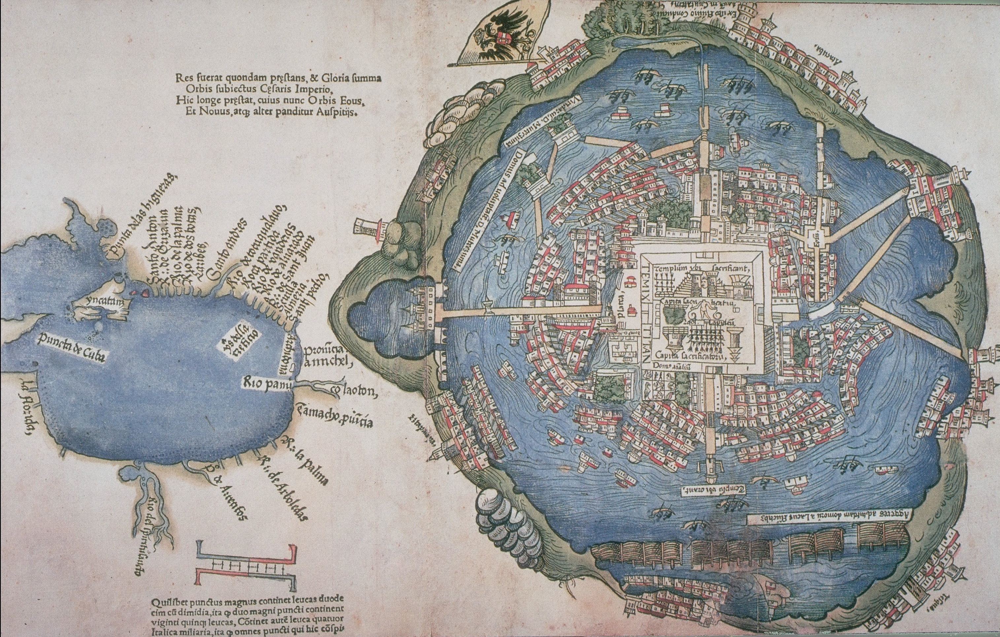

Directions: Study the map image and the background, then answer the questions.

Background. The map shows Tenochtitlan, the Aztec capital built on an island in Lake Texcoco, as European readers first saw it in print in 1524, three years after the city fell. Bernal Diaz, a Spanish foot soldier who entered the city with Cortes on November 8, 1519, described crowds of canoes, towns along the lake, and a Spanish company of 450 men. Spain governed the city it rebuilt on the site, Mexico City, as the capital of New Spain. In 1685, in the French Caribbean, King Louis XIV issued the Code Noir, which required enslaved people to be baptized Catholic, made the children of enslaved parents enslaved, and punished a month of flight with the loss of ears and a brand.
1. What city does the map show, when was the map published, and what did the city become under Spanish rule?
2. Diaz entered the city with 450 men and still took part in its conquest two years later. Name the two forces, besides the Spanish company itself, that the lesson credits with bringing the city down, and explain each in one phrase.
3. A French governor in Canada wants to order his Indigenous trading partners to bring more pelts at lower prices. Explain, from the fur trade's structure, why he cannot simply command them, naming two things his partners control.
4. State three rules the Code Noir of 1685 laid down, covering religion, birth, and flight, and name the part of the French empire where the code did its work.
1. What city, when published, and what did it become? The map shows Tenochtitlan, the Aztec capital on its island in Lake Texcoco, published at Nuremberg in 1524 with the letters of Cortes. Cortes rebuilt the conquered city as Mexico City, which became the capital of New Spain, the viceroyalty that governed Spain's North American empire from Panama to the present day American Southwest. (Blueprint 3)
2. Name the two forces besides the Spanish company. Indigenous allies and epidemic disease. The Tlaxcalans and other peoples who resented Aztec tribute joined Cortes in the tens of thousands and supplied the army that besieged the city, fighting for reasons of their own. Smallpox, carried into the city during the fighting, killed defenders inside Tenochtitlan while the siege closed around it. The city fell in August 1521. (Blueprint 3)
3. Why can the governor not command his partners? The fur trade ran through country the French did not control. His partners controlled the furs themselves, the hunting country and its routes, the canoes and guides the trade moved by, and the choice of other buyers. A governor could propose terms in council and seal them with gifts. He could not impose prices or quantities on nations with armies of their own, whose hunters, guides, and alliance France needed every year. (Blueprint 4)
4. State three rules of the Code Noir, and where it worked. Religion: the code required enslaved people to be baptized Catholic. Birth: the children of enslaved mothers were themselves enslaved, so slavery passed by birth. Flight: a month of flight was punished with the loss of ears and a brand. The code did its work in the French Caribbean sugar colonies, Saint Domingue above all, whose plantations ran on enslaved African labor. (Blueprint 4)
Teacher note. This check is formative. Question 2 is the entry diagnostic: students who credit Spanish weapons alone have missed the lesson's central correction, that the conquest was carried by Indigenous armies and disease. Question 4 predicts success on the activity verdict, because it requires students to state French slavery from the code itself rather than from the contrast with Spain.